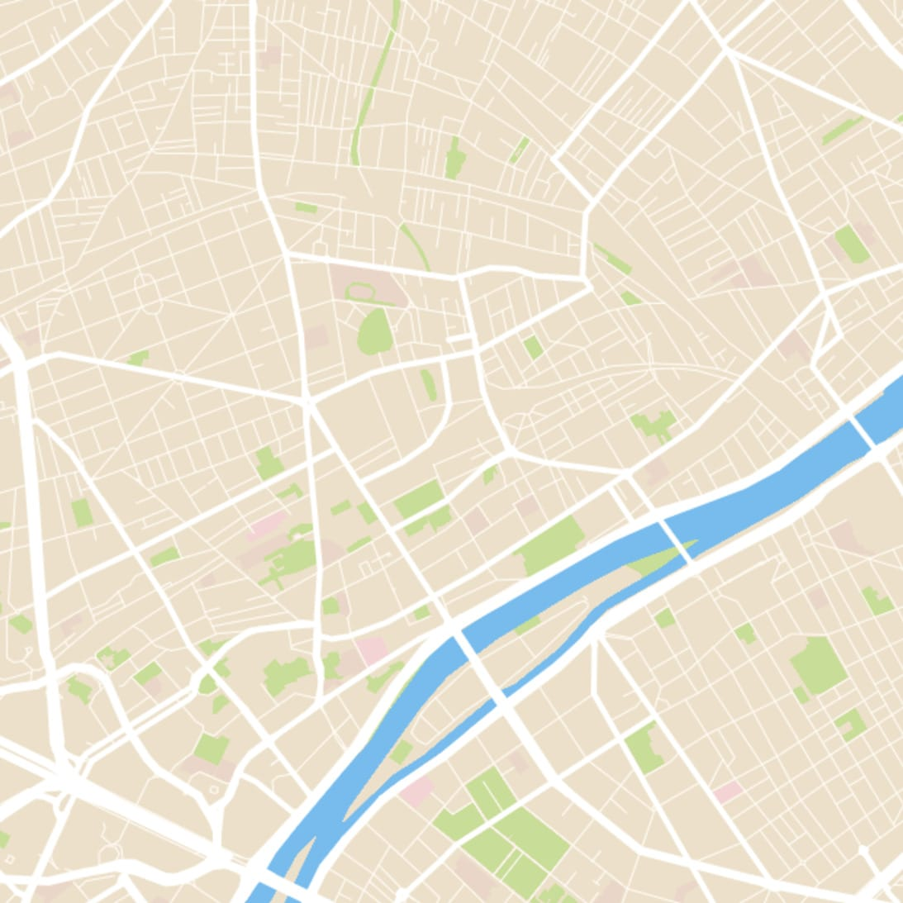
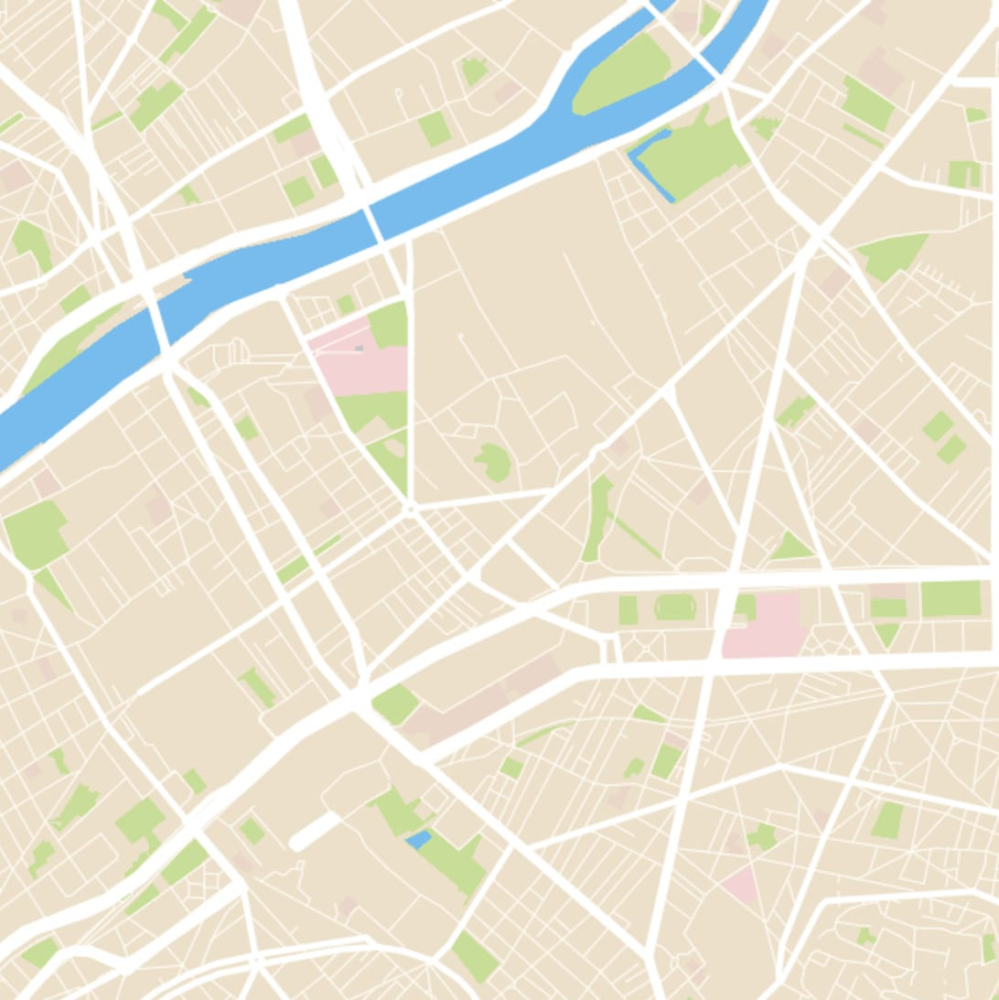
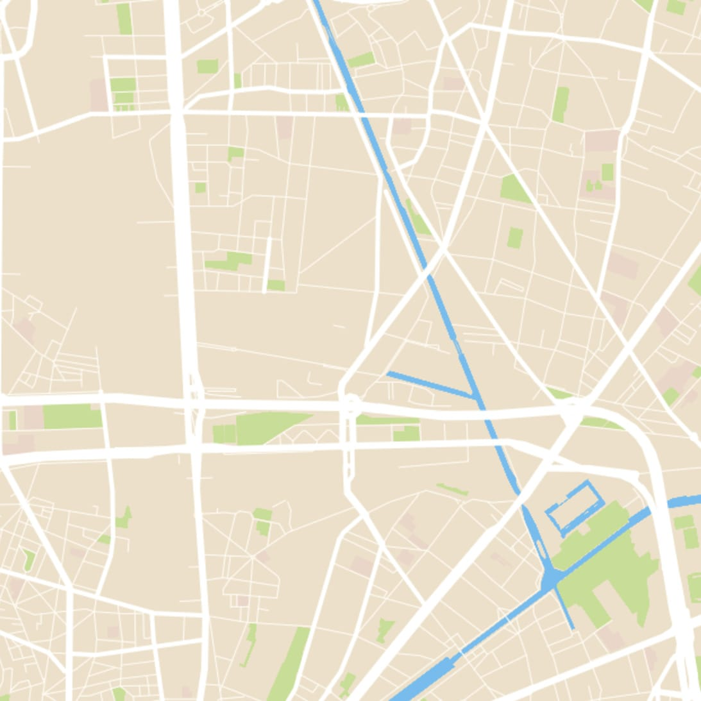
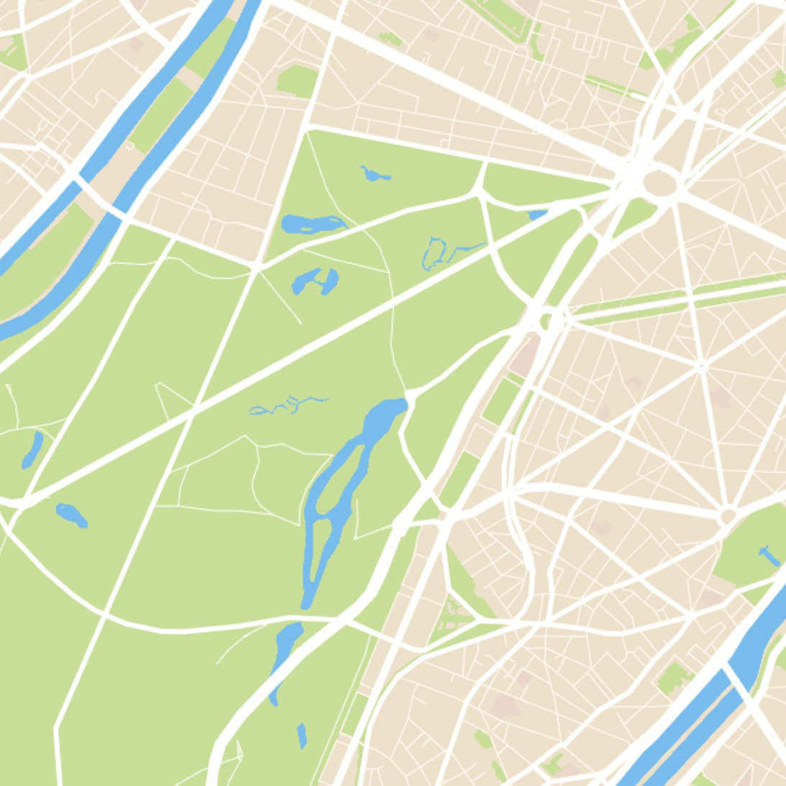
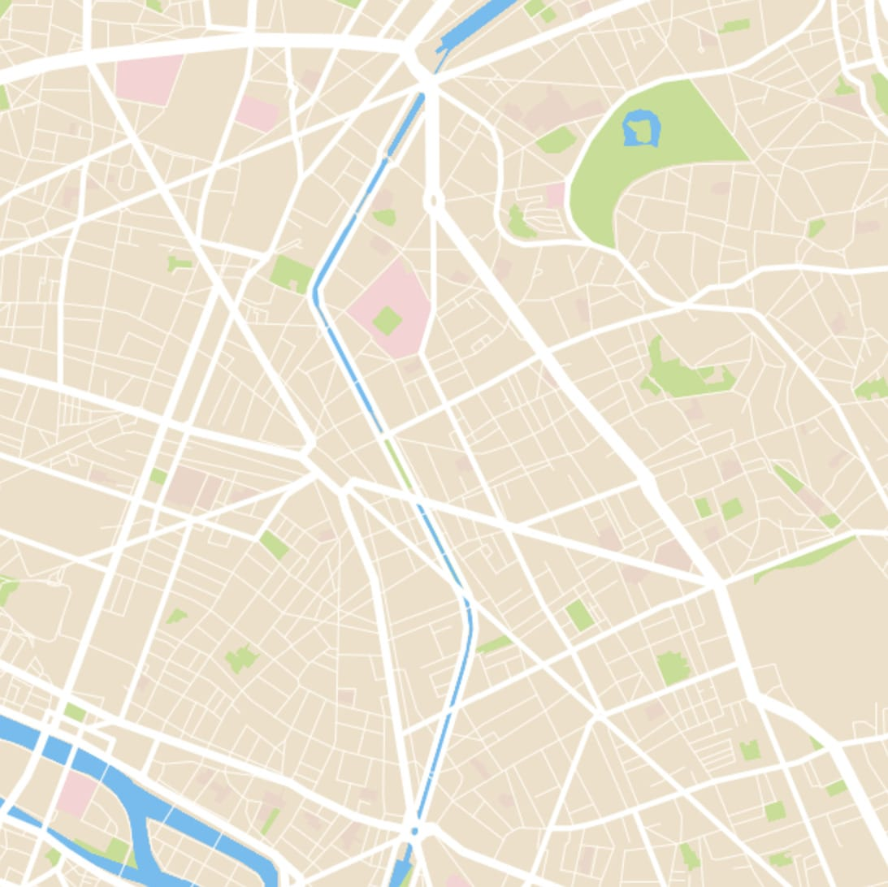
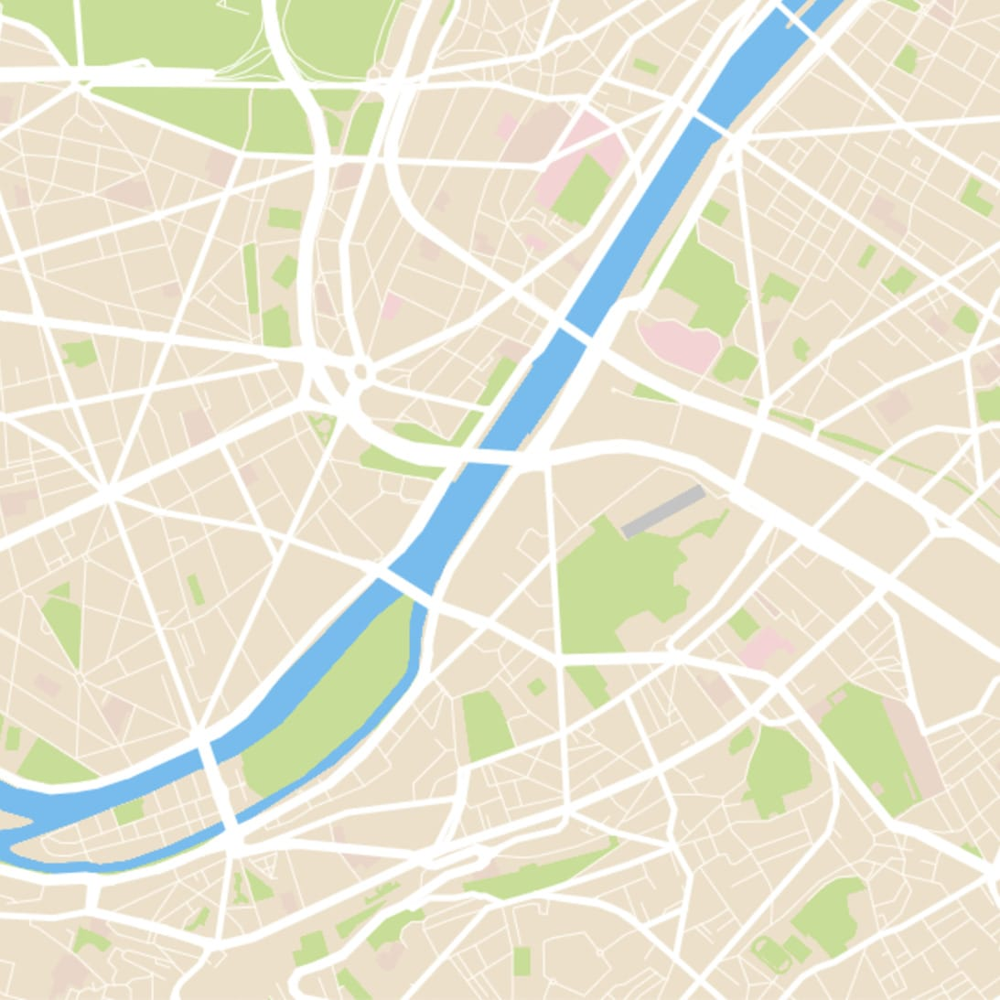
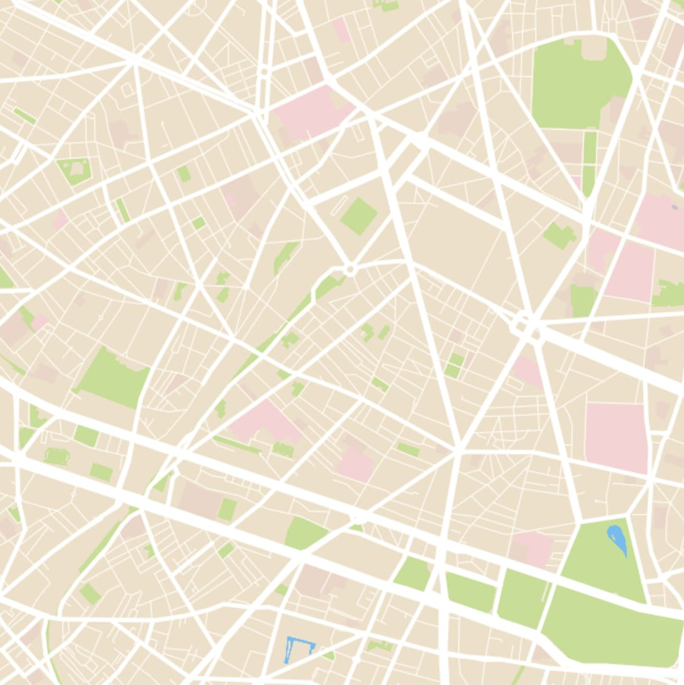
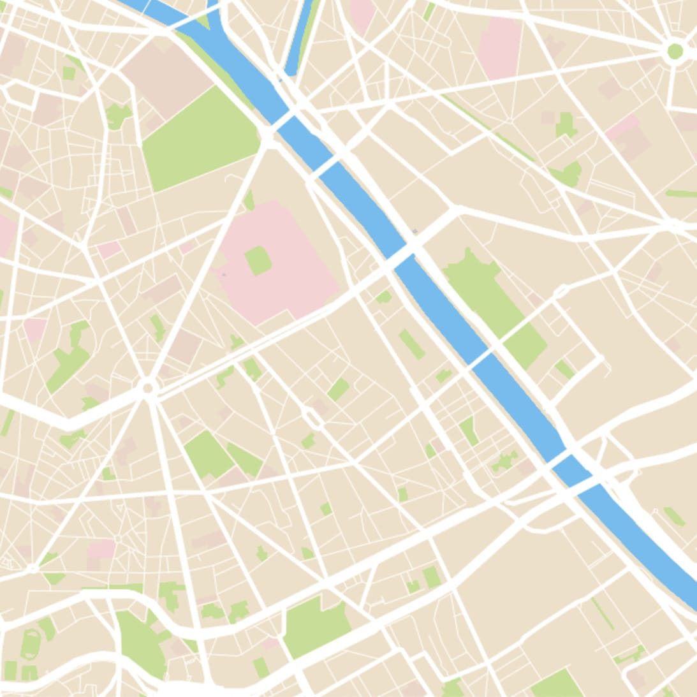

How we make maps at Septima
Agenda
- Septima
- Maps on the web
- Open geodata
- Frontend frameworks
- Septima Map
18 employees
- Developers
- Designers
- Geo-Information Specialists
@haakseth
🇳🇴
🐶
🏐
🌎 💻 🌍 ☕️ 🌏
|  |
 |
 |
|  |
|
 |
|  |
 |
 |
DAWA
- Addresses
- Regions and municipalities
- Cadastre (properties) and BBR (buildings)
- The one your hipster friend uses
- Born vector
- Complete ecosystem
Why not just use Google Maps and call it a day?
That's a whole talk of itself
... but we've got you covered
- Plug-and-play
- Free, no registration, no data quotas
- Uses high quality Danish maps
Reveal.js has css that disables the marker. Check out a live example at Codepen